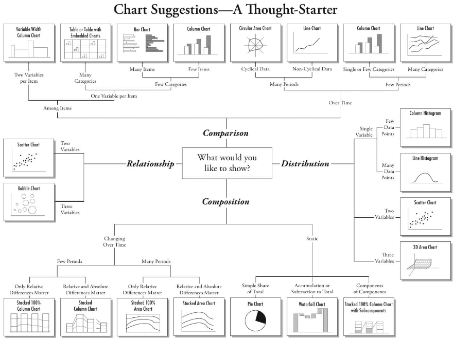

Selecting the correct chart
Credits
Full credit is assigned to the vcd-tutorial.
A more general treatment of graphical methods for categorical data is contained in the book, Discrete Data Analysis with R: Visualizing and Modeling Techniques for Categorical and Count Data [Friendly and Meyer 2016]. Discrete Data Analysis with R: Visualization and Modeling Techniques for Categorical and Count Data. Chapman & Hall CRC, Boca Raton, FL. ISBN 978-1-4987-2583-5.
Due credit is given to Tatvic and Visualizing a Categorical Variable for the basis of content in 'Selecting the Right Chart Type' and 'Data structures'.
Chart purpose
There are four basic presentation types
- Comparison
- Composition
- Distribution
- Relationship
To determine which amongst these is best suited, ask the questions
- How many variables do you want to show in a single chart
- How many data points will you display for each variable
- Will you display values over a period of time, or among items or groups
Below is a great infographic on selecting the (or a) correct chart type by Dr. Andrew Abela.

Categorical data structures
Forms of categorical data
Categorical data can be
- nominal, qualitative
- ordinal
For visualisation, the main difference is that ordinal data suggests a particular display order. Purely categorical data can come in a range of formats. The most common are
- raw data (also referred to as unit record data or microdata) i.e. individual observations
- aggregated data: counts for each unique combination of levels
- cross tabulated data
Working With Categorical Variables
Categorical variables are usually represented as
- character vectors
- factors
Some advantages of factors
- more control over ordering of levels
- levels are preserved when forming subsets
- even if there are no rows containing a particular factor value, the fact that there could have been rows with that value is preserved when the factor data type is used.
Most plotting and modelling functions will convert character vectors to factors with levels ordered alphabetically. Some standard R functions for working with factors include
factorcreates a factor from another type of variablelevelsreturns the levels of a factorreorderchanges level order to match another variablerelevelmoves a particular level to the first position as a base linedroplevelsremoves levels not in the variable
The tidyverse package forcats adds some more tools,
including
fct_inordercreates a factor with levels ordered by first appearancefct_infreqorders levels by decreasing frequencyfct_revreverses the levelsfct_recodechanges factor levelsfct_relevelmoves one or more levelsfct_c mergestwo or more factors
Data structures
The first thing you need to know is that categorical data can be
represented in three different forms in R, and it is sometimes necessary
to convert from one form to another, for carrying out statistical tests,
fitting models or visualising the results. Once a data object exists in
R, you can examine its complete structure with the str()
function, or view the names of its components with the
names() function.
HairEyeColor from the inbuilt datasets
package contains data for a survey of individuals, recording hair color,
eye color, and gender of 592 individuals. It is stored in cross
tablulated (table) form. Thus
HairEyeColorA little more exploration
class(HairEyeColor)
str(HairEyeColor)
sum(HairEyeColor) # number of cases
sapply(dimnames(HairEyeColor), length) # table dimension sizesRaw (unit record) Data
Use expand.dft() from vcd package to
transform to raw (unit record) data format
raw_hec <- expand.dft(HairEyeColor)
head(raw_hec)Aggregated Data
One way to aggregate raw categorical data is to use
count from dplyr
agg_count <- raw_hec %>% count(Hair, Eye, Sex)
head(agg_count)The count_ function from dplyr allows the
variables for use to be read from the data
count_agg <- raw_hec %>% count_(names(raw_hec))
head(count_agg)However count_() is deprecated since dplyr
v0.7, so now we should do something like this instead:
count_agg <- raw_hec %>% count(across(everything()))
head(count_agg)Cross-Tabulated Data
Cross-tabulated data can be produced from aggregate data using
xtabs()
raw_hec <- expand.dft(HairEyeColor)
count_agg <- raw_hec %>% count(across(everything()))
xtabs(n ~ Hair + Eye + Sex, data = count_agg)Cross-tabulated data can be produced from raw (unit record) data
using table()
xtb <- table(raw_hec)
xtb- Both raw (unit record) and aggregate data in this example are in tidy form, the cross tabulated date is not.
- The cross-tabulated data can be converted to the tidy aggregate form
using
as.data.frame
raw_hec <- expand.dft(HairEyeColor)
xtb <- table(raw_hec)
class(xtb)
xtb_df <- as.data.frame(xtb)
class(xtb_df)
head(xtb_df)Raw data, unit record data, case form, microdata
All of these are synonyms for a data frame containing individual
observations, with one or more factors, used as the classifying
variables. There may also be numeric covariates. The total number of
observations is nrow(X), and the number of variables is
ncol(X).
The Arthritis data is available in raw data form in the
vcd package. There are two explanatory factors,
Treatment and Sex. Age is a
numeric covariate, and Improved is the response, an ordered
factor, with levels None < Some < Marked. Excluding
ID and Age, we would have a 2 × 2 × 3
contingency table for Treatment, Sex and
Improved.
names(Arthritis)
str(Arthritis)
head(Arthritis,5)Frequency form
- a.k.a. Aggregated form
a data frame containing one or more factors, and a frequency
variable, often called Freq or count or
n. The total number of observations is
sum(X$Freq), sum(X[,"Freq"]) or some
equivalent form. The number of cells in the table is
nrow(X).
arthritis_agg <- Arthritis %>% count(across(names(Arthritis)))
head(arthritis_agg)Or dropping ID and Age
arthritis_drop <- count(Arthritis, Treatment, Sex, Improved)
head(arthritis_drop)Table form
- a.k.a. Cross tabulated form
a matrix, array or table object, whose elements are the frequencies
in an n-way table. The variable names (factors) and their levels are
given by dimnames(X). The total number of observations is
sum(X). The number of dimensions of the table is
length(dimnames(X)), and the table sizes are given by
sapply(dimnames(X), length).
For example, the HairEyeColor dataset in
vcd is stored in table form. Let us look at similar form
for the Arthritis dataset, having already dropped
ID and Age
arthritis_drop <- count(Arthritis, Treatment, Sex, Improved)
xtabs(n ~ Treatment + Improved + Sex, data = arthritis_drop)Ordered factors and reordered tables
For the HairEyeColor data, hair color and eye color are
ordered arbitrarily. For visualising the data using mosaic plots and
other methods described below, it turns out to be more useful to assure
that both hair color and eye color are ordered from dark to light. It is
easiest to reorder by indexing. Again str() is your
friend.
str(HairEyeColor)
HairEyeColor <- HairEyeColor[ , c(1,3,4,2), ]
str(HairEyeColor)Let us start by plotting a bar chart of the Hair
variable
raw_hec %>%
ggplot() + geom_bar(aes(x = Hair))For a nominal variable it is often better to order the bars by
decreasing frequency. Now, reorder Hair using the
forcats library
raw_hec %>%
mutate(Hair = fct_infreq(Hair)) %>%
ggplot() +
geom_bar(aes(x = Hair))With data in case form or frequency form, when you have ordered factors represented with character values, you must ensure that they are treated as ordered in R.
Imagine that the Arthritis data was read from a text file. A suitable .txt file is given in the extdata folder and has been preloaded using
arthritis_txt <- read.delim(“Chapter-7-categorical/extdata/arthritis.txt”)
str(arthritis_txt)By default the Improved will be ordered alphabetically
i.e. Marked, None, Some, or not at all. This is not what we want. In
this case, the function ordered() (and others) can be useful.
levels(arthritis_txt$Improved)
arthritis_txt$Improved <- ordered(arthritis_txt$Improved, levels=c("None", "Some", "Marked"))
levels(arthritis_txt$Improved)With this order of Improved, the response in this data,
a mosaic display of Treatment and Improved
shows a clearly interpretable pattern.
arthritis_txt$Improved <- ordered(arthritis_txt$Improved, levels=c("None", "Some", "Marked"))
mosaic(~Treatment + Improved, data = arthritis_txt, gp = shading_max,
split_vertical = TRUE, main="Arthritis: [Treatment] [Improved]")Finally, there are situations where, particularly for display
purposes, you want to reorder the dimensions of an n-way table, or
change the labels for the variables or levels. This is easy when the
data are in table form. aperm() permutes the dimensions,
and assigning to names and dimnames changes variable names and level
labels respectively.
ftable(HairEyeColor)
hec_mod <- aperm(HairEyeColor, c(3, 1, 2))
dimnames(hec_mod)[[1]] <- c("M", "F")
names(dimnames(hec_mod)) <- c("Gender", "HAIR", "Eyes")
ftable(hec_mod)Frequency tables
table() and friends
You can generate frequency tables from factor variables using the
table() function, tables of proportions using the
prop.table() function, and marginal frequencies using
margin.table().
set.seed(1010)
n=500
A <- factor(sample(c("a1","a2"), n, rep=TRUE))
B <- factor(sample(c("b1","b2"), n, rep=TRUE))
C <- factor(sample(c("c1","c2"), n, rep=TRUE))
mydata <- data.frame(A,B,C)
head(mydata)
# 2-Way Frequency Table
attach(mydata)
mytable <- table(A,B) # A will be rows, B will be columns
mytable # print table
margin.table(mytable, 1) # A frequencies (summed over B)
margin.table(mytable, 2) # B frequencies (summed over A)
prop.table(mytable) # cell percentages
prop.table(mytable, 1) # row percentages
prop.table(mytable, 2) # column percentagestable() can also generate multidimensional tables based
on 3 or more categorical variables. In this case, use the
ftable() or structable() function to print the
results more attractively.
# 3-Way Frequency Table
mytable <- table(A, B, C)
ftable(mytable)table() ignores missing values by default. To include NA
as a category in counts, include the table option
exclude=NULL if the variable is a vector. If the variable
is a factor you have to create a new factor using
newfactor <- factor(oldfactor, exclude=NULL).xtabs()
The xtabs() function allows you to create
crosstabulations of data using formula style input. This typically works
with case form data supplied in a data frame or a matrix. The result is
a contingency table in array format, whose dimensions are determined by
the terms on the right side of the formula.
set.seed(1010)
n=500
A <- factor(sample(c("a1","a2"), n, rep=TRUE))
B <- factor(sample(c("b1","b2"), n, rep=TRUE))
C <- factor(sample(c("c1","c2"), n, rep=TRUE))
mydata <- data.frame(A,B,C)
# 3-Way Frequency Table
mytable <- xtabs(~A+B+C, data=mydata)
mytable
ftable(mytable) # print table
summary(mytable) # chi-square test of indepedenceIf a variable is included on the left side of the formula, it is assumed to be a vector of frequencies (useful if the data have already been tabulated in frequency form).
head(GSS)
(GSStab <- xtabs(count ~ sex + party, data=GSS))summary(GSStab)structable()
For 3-way and larger tables, the structable() function in
vcd provides a convenient and flexible tabular display. The
variables assigned to the rows and columns of a two-way display can be
specified by a model formula.
structable(HairEyeColor) # show the table: defaultstructable(Hair+Sex ~ Eye, HairEyeColor) # specify col ~ row variablesIt also returns an object of class structable which may
be plotted with mosaic()
HSE <- structable(Hair+Sex ~ Eye, HairEyeColor) # save structable object
mosaic(HSE) # plot itCollapsing over table factors
aggregate(), margin.table() and apply()
It sometimes happens that we have a data set with more variables or factors than we want to analyse, or else, having done some initial analyses, we decide that certain factors are not important, and so should be excluded from graphic displays by collapsing (summing) over them. For example, mosaic plots and fourfold displays are often simpler to construct from versions of the data collapsed over the factors which are not shown in the plots.
The appropriate tools to use again depend on the form in which the
data are represented, a case-form data frame, a frequency form data
frame (aggregate()), or a table form array or table object
(margin.table() or apply()).
When the data are in frequency form, and we want to produce another
frequency data frame, aggregate() is a handy tool, using
the argument FUN = sum to sum the frequency variable over
the factors not mentioned in the formula.
The data frame DaytonSurvey in the vcdExtra
package represents a table giving the frequencies of reported use
(ever used?) of alcohol, cigarettes and marijuana in a
sample of high school seniors, also classified by sex and race.
str(DaytonSurvey)
head(DaytonSurvey)To focus on the associations among the substances, we want to
collapse over sex and race. The right hand
side of the formula used in the call to aggregate() gives
the factors to be retained in the new frequency data frame,
Dayton_ACM_df.
# data in frequency form
# collapse over sex and race
Dayton_ACM_df <- aggregate(Freq ~ cigarette + alcohol + marijuana, data = DaytonSurvey, FUN = sum)
Dayton_ACM_dfWhen the data are in table form, and we want to produce another
table, apply() with FUN = sum can be used in a
similar way to sum the table over dimensions not mentioned in the MARGIN
argument. margin.table() is just a wrapper for
apply() using the sum() function.
Example
To illustrate, we first convert the DaytonSurvey to a 5-way table
using xtabs(), giving Dayton_tab.
# in table form
Dayton_tab <- xtabs(Freq ~ cigarette + alcohol + marijuana + sex+race, data = DaytonSurvey)
structable(cigarette + alcohol + marijuana ~ sex + race, data = Dayton_tab)Then, use apply() on Dayton_tab to give the
3-way table Dayton_ACM_tab summed over sex and race. The
elements in this new table are the column sums for
Dayton_tab shown by structable() just
above.
Dayton_tab <- xtabs(Freq ~ cigarette + alcohol + marijuana + sex+race, data = DaytonSurvey)
# collapse over sex and race
Dayton_ACM_tab <- apply(Dayton_tab, MARGIN = 1:3, FUN = sum)
Dayton_ACM_tab <- margin.table(Dayton_tab, 1:3) # same result
structable(cigarette + alcohol ~ marijuana, data = Dayton_ACM_tab)Collapsing table levels
collapse.table()
A related problem arises when we have a table or array and for some
purpose we want to reduce the number of levels of some factors by
summing subsets of the frequencies. For example, we may have initially
coded Age in 10 year intervals, and decide that, either for analysis or
display purposes, we want to reduce Age to 20 year intervals. The
collapse.table() function in vcdExtra was
designed for this purpose.
Example
Create a 3-way table, and collapse Age from 10 year to 20 year intervals. First, we generate a 2 × 6 × 3 table of random counts from a Poisson distribution with mean of 100.
# create some sample data in frequency form
sex <- c("Male", "Female")
age <- c("10-19", "20-29", "30-39", "40-49", "50-59", "60-69")
education <- c("low", "med", "high")
eddata <- expand.grid(sex=sex, age=age, education=education)
set.seed(1010)
counts <- rpois(36, 100) # random Possion cell frequencies
eddata <- cbind(eddata, counts)
# make it into a 3-way table
t1 <- xtabs(counts ~ sex + age + education, data=eddata)
structable(t1)Now collapse age to 20 year intervals, and education to 2 levels. In the arguments, levels of age and education given the same label are summed in the resulting smaller table.
sex <- c("Male", "Female")
age <- c("10-19", "20-29", "30-39", "40-49", "50-59", "60-69")
education <- c("low", "med", "high")
eddata <- expand.grid(sex=sex, age=age, education=education)
set.seed(1010)
counts <- rpois(36, 100) # random Possion cell frequencies
eddata <- cbind(eddata, counts)
t1 <- xtabs(counts ~ sex + age + education, data=eddata)
# collapse age to 3 levels, education to 2 levels
t2 <- collapse.table(t1, age=c("10-29", "10-29", "30-49", "30-49", "50-69", "50-69"), education=c("<high", "<high", "high"))
structable(t2)Converting among frequency tables and data frames
As we have seen, a given contingency table can be represented equivalently in different forms, but some R functions were designed for one particular representation. The table below shows some handy tools for converting from one form to another.
Tools for converting among different forms for categorical data
| – | To this | ||
|---|---|---|---|
| From this | Case form | Frequency form | Table form |
| Case form | noop | xtabs(~A+B) | table(A,B) |
| Frequency form | expand.dft(X) | noop | xtabs(count~A+B) |
| Table form | expand.dft(X) | as.data.frame(X) | noop |
A contingency table in table form (an object of class(table)) can be
converted to a data.frame with as.data.frame().
The resulting data.frame contains columns representing
the classifying factors and the table entries (as a column named by the
responseName argument, defaulting to Freq. This is the
inverse of xtabs()).
Convert the Arthritis data in case form to a 3-way table of Treatment
× Sex × Improved. Note the use of with() to avoid having to
use Arthritis$Treatment etc. within the call to
table().
Art_tab <- with(Arthritis, table(Treatment, Sex, Improved))
str(Art_tab)Art_tab <- with(Arthritis, table(Treatment, Sex, Improved))
ftable(Art_tab)There may also be times that you will need an equivalent case form
data.frame with factors representing the table variables
rather than the frequency table. For example, the mca()
function in package MASS only operates on data in this
format.
Art_tab <- with(Arthritis, table(Treatment, Sex, Improved))
Art_df <- expand.dft(Art_tab)
str(Art_df)
Art_dfFourfold plots
The UCBAdmissions data serves as an example of a 2 × 2 × 6 table, with Dept as the stratifying variable.
UCB <- aperm(UCBAdmissions, c(2, 1, 3))
dimnames(UCB)[[2]] <- c("Yes", "No")
names(dimnames(UCB)) <- c("Sex", "Admit?", "Department")
ftable(UCB)oddsratio(UCBAdmissions, log=FALSE)lor <- oddsratio(UCBAdmissions) # capture log odds ratios
summary(lor)woolf_test(UCBAdmissions)We can visualise the odds ratios of Admission for each department
with fourfold displays using fourfold(). The cell
frequencies \(n_{ij}\) of each 2 × 2
table are shown as a quarter circle whose radius is proportional to
\(√n_{ij}\), so that its area is
proportional to the cell frequency. Confidence rings for the odds ratio
allow a visual test of the null of no association. The rings for
adjacent quadrants overlap iff the observed counts are consistent with
the null hypothesis. In the extended version (the default), brighter
colors are used where the odds ratio is significantly different from
1.
col <- c("#99CCFF", "#6699CC", "#F9AFAF", "#6666A0", "#FF0000", "#000080")
UCB <- aperm(UCBAdmissions, c(2, 1, 3))
fourfold(UCB, mfrow = c(2,3), color = col)Fourfold display for the UCBAdmissions data. Where the odds ratio differs significantly from 1.0, the confidence bands do not overlap, and the circle quadrants are shaded more intensely.
Another vcd function, cotabplot(), provides
a more general approach to visualising conditional associations in
contingency tables, similar to trellis like plots produced by
coplot() and lattice graphics. The panel argument supplies
a function used to render each conditional subtable. The following gives
a display similar to the fourfold example.
UCB <- aperm(UCBAdmissions, c(2, 1, 3))
cotabplot(UCB, panel = cotab_fourfold)Odds ratios
There is a plot() method for oddsratio
objects. By default, it shows the 95% confidence interval for the log
odds ratio.
lor <- oddsratio(UCBAdmissions)
plot(lor, xlab = "Department", ylab = "Log Odds Ratio (Admit | Gender)")Log odds ratio plot for the UCBAdmissions data
Doubledecker plots
When we want to view the conditional probabilities of a response
variable, e.g. Admit, in relation to several factors, an
alternative visualisation is a doubledecker() plot. This
plot is a specialised version of a mosaic plot, which highlights the
levels of a response variable, plotted vertically, in relation to the
factors, shown horizontally. The following indexes on the first factor,
Admit, to make Admitted the highlighted level.
In this plot, the association between Admit and
Gender is shown where the heights of the highlighted
conditional probabilities do not align. The excess of females admitted
in Dept A stands out here.
doubledecker(Admit ~ Dept + Gender, data = UCBAdmissions[2:1,,])Doubledecker display for the UCB Admissions data. The heights of the highlighted bars show the conditional probabilities of Admit, given Dept and Gender.
Changing the labels for variables and levels
With data in contingency table form or as a frequency data frame, it
often happens that the variable names and/or the level values of the
factors, while suitable for analysis, are less than adequate when used
in mosaic plots and other strucplot displays.
For example, we might prefer that a variable named ses
appear as Socioeconomic Status, or a factor with levels
c("M", "F") be labeled using
c("Male", "Female") in a plot. Or, sometimes we start with
a factor whose levels are fully spelled out
(e.g. c("strongly disagree", "disagree", "neutral", "agree", "strongly agree")),
only to find that the level labels overlap in graphic displays. The
structplot framework in vcd provides an
extremely large variety of functions and options for controlling almost
all details of text labels in mosaics and other plots. See
help(labelings) for an overview.
For example, we showed how to rearrange the dimensions of the UCBAdmissions table, change the names of the table variables, and relabel the levels of one of the table variables. The code below changes the actual table for plotting purposes, but we pointed out that these changes can create other problems in analysis.
UCB <- aperm(UCBAdmissions, c(2, 1, 3))
names(dimnames(UCB)) <- c("Sex", "Admit?", "Department")
dimnames(UCB)[[2]] <- c("Yes", "No")The same effects can be achieved without modifying the data using the
set_varnames and set_labels options in
mosaic() as follows
vnames <- list(set_varnames = c(Admit="Admission", Gender="Sex", Dept="Department"))
lnames <- list(Admit = c("Yes", "No"),
Gender = c("Males", "Females"),
Dept = LETTERS[1:6])
mosaic(UCBAdmissions, labeling_args=vnames, set_labels=lnames)Mosaic plots
The essential idea is to recursively sub-divide a unit square into rectangular tiles for the cells of the table, such that the are area of each tile is proportional to the cell frequency.
mosaic() provides a wide range of options for the
directions of splitting, the specification of shading, labeling,
spacing, legend and many other details. It is actually implemented as a
special case of a more general class of displays for n-way tables called
strucplot, including sieve diagrams, association plots,
double decker plots as well as mosaic plots. For details, see
help(strucplot) and the “See also” links, and also Meyer,
Zeileis, and Hornik (2006), which is available as an R vignette via
vignette("strucplot", package="vcd").
Let us look at the association between Treatment and
Improved via the following call following call to
mosaic()
mosaic(~Treatment + Improved, data = Arthritis, gp = shading_max,
split_vertical = TRUE, main="Arthritis: [Treatment] [Improved]")Note that the residuals for the independence model were not large (as
shown in the legend), yet the association between Treatment
and Improved is highly significant. In contrast, one of the
other shading schemes, from Friendly (1994), use
gp = shading_Friendly, uses fixed cutoffs of ±2, ±4, to
shade cells which are individually significant at approximately α = 0.05
and α = 0.001 levels, respectively
mosaic(~Treatment + Improved, data = Arthritis, gp = shading_Friendly,
split_vertical = TRUE, main="Arthritis: [Treatment] [Improved]")Spine and conditional density plots
When continuous predictors are available, and potentially important,
in explaining a categorical outcome, we can use generalise linear models
(GLMs) to investigate. Without going into fitting such models here, it
would be remiss not to illustrate some visualisations in
vcd that are helpful here. The first of these is the spine
plot or spinogram (Hummel 1996) (produced with spine()).
These are special cases of mosaic plots with specific spacing and
shading to show how a categorical response varies with a continuous or
categorical predictor.
They are also a generalization of stacked bar plots where not the heights but the widths of the bars corresponds to the relative frequencies of x. The heights of the bars then correspond to the conditional relative frequencies of y in every x group.
For the Arthritis data, we can see how Improved varies
with Age as follows.
spine() takes a formula of the form y ~ x
with a single dependent factor and a single explanatory variable x (a
numeric variable or a factor). The range of a numeric variablex is
divided into intervals based on the breaks argument, and stacked bars
are drawn to show the distribution of y as x varies. As shown below, the
discrete table that is visualised is returned by the function.
(spine(Improved ~ Age, data = Arthritis, breaks = 3))Switching the breaks option
(spine(Improved ~ Age, data = Arthritis, breaks = "Scott"))The conditional density plot (Hofmann and Theus 2005) is a further generalisation. This visualisation technique is similar to spinograms, but uses a smoothing approach rather than discretising the explanatory variable. As well, it uses the original x axis and not a distorted one.
cd_plot(Improved ~ Age, data = Arthritis)In such plots, it is useful to also see the distribution of the
observations across the horizontal axis, e.g. with a rug()
plot.
cd_plot() is from the vcd package. Similar
results can be obtained by using cdplot() from the
graphics package. cdplot() also allows us to
add a rug plot, thus
cdplot(Improved ~ Age, data = Arthritis)
with(Arthritis, rug(jitter(Age), col="white", quiet=TRUE))It can be easily seen that the proportion of patients reporting
Some or Marked improvement increases with
Age, but there are some peculiar bumps in the distribution.
These may be real or artifactual, but they would be hard to see with
most other visualization methods. When we switch from non-parametric
data exploration to parametric statistical models, such effects are
easily missed.
Measures of Agreement
The Kappa() function in the vcd package
calculates Cohen’s κ and weighted κ for a square two way table with the
same row and column categories (Cohen 1960). Normal theory z-tests are
obtained by dividing κ by its asymptotic standard error (ASE). A
confint() method for Kappa objects provides confidence
intervals.
(K <- Kappa(SexualFun))confint(K)A visualisation of agreement, both unweighted and weighted for degree
of departure from exact agreement is provided by the
agreementplot() function. An agreementplot for the
SexualFun data is generated below. The Bangdiwala measures represent the
proportion of the shaded areas of the diagonal rectangles, using weights
w1 for exact agreement, and w2 for partial agreement one step from the
main diagonal.
agree <- agreementplot(SexualFun, main="Is sex fun?")
unlist(agree)In other examples, the agreement plot can help to show sources of disagreement. For example, when the shaded boxes are above or below the diagonal (red) line, a lack of exact agreement can be attributed in part to different frequency of use of categories by the two raters lack of marginal homogeneity.
A few other thoughts & ideas
Credit for the basis of this section is duly given to STHDA.
To visualise a small data set containing multiple categorical (or qualitative) variables, you can create either a bar plot, a balloon plot or a mosaic plot.
For a large multivariate categorical data, you need specialised statistical techniques dedicated to categorical data analysis, such as simple and multiple correspondence analysis. These methods make it possible to analyse and visualise the association, i.e. correlation, between a large number of qualitative variables.
Bar plot
Demo data set, HairEyeColor, distribution of hair and
eye color and sex in 592 statistics students
data(HairEyeColor)
df <- as.data.frame(HairEyeColor)
head(df)Create the bar graph
- Hair color on x axis
- Change bar fill by Eye color
- Split the graph into multiple panel by Sex
ggplot(df, aes(x = Hair, y = Freq))+
geom_bar(
aes(fill = Eye), stat = "identity", color = "white",
position = position_dodge(0.9)
)+
facet_wrap(~Sex) +
fill_palette("jco")Balloon plot
Visualise a grouped frequency table. Create a multi panel plot by
Sex
df <- as.data.frame(HairEyeColor)
ggballoonplot(df, x = "Hair", y = "Eye", size = "Freq",
fill = "Freq", facet.by = "Sex",
ggtheme = theme_bw()) +
scale_fill_viridis_c(option = "C")Mosaic plot
A mosaic plot is basically an area proportional visualisation of observed frequencies, composed of tiles (corresponding to the cells) created by recursive vertical and horizontal splits of a rectangle. The area of each tile is proportional to the corresponding cell entry, given the dimensions of previous splits.
Mosaic graph can be created using either the function
mosaicplot() (in graphics) or the function
mosaic() (in vcd package). Read more at
Visualizing Multi-way Contingency Tables with vcd.
Example of mosaic plot
mosaic(HairEyeColor, shade = TRUE, legend = TRUE)Correspondence analysis
Correspondence analysis can be used to summarise and visualise the information contained in a large contingency table formed by two categorical variables.
Required package FactoMineR for the analysis and
factoextra for the visualisation
res_ca <- CA(housetasks, graph = FALSE)
fviz_ca_biplot(res_ca, repel = TRUE)From the graphic above, it’s clear that
- Housetasks such as dinner, breakfeast, laundry are done more often by the wife
- Driving and repairs are done more frequently by the husband